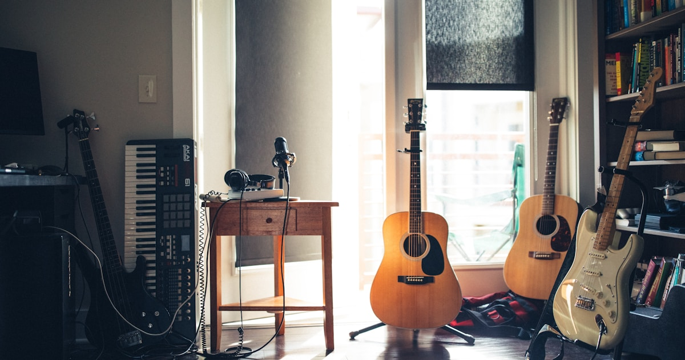

Hear the hook
Press play for an original browser arrangement of a public-domain melody.
FREE BROWSER GAME05 ROUNDS
Listen to a melody, trust your first instinct, and build a perfect streak. A fresh five-round music quiz is ready every day.
CLASSICAL
Listen as many times as you need
A LITTLE MUSIC BREAK
NoteGuess is a fast song guessing game made for headphones, coffee breaks, and friendly rivalries.
Press play for an original browser arrangement of a public-domain melody.
Choose from four titles. Spend a hint to reveal the genre or first letter.
Finish all five rounds, then post your clean score without spoiling the answers.
SOURCED AND TRANSPARENT
NoteGuess is built as a browser-only quiz. The current five rounds use short original arrangements of public-domain source melodies, rather than commercial recordings.

SOURCE NOTES
These references identify source material only. NoteGuess plays its own synthesized arrangements in the browser.
GOOD TO KNOW
It is a free browser music quiz where you hear a short melody and pick the song title. NoteGuess is a lightweight song guesser game with five daily rounds and no account.
No. The game runs in your browser on desktop or mobile. Your score and streak are kept locally on this device.
The current demo plays synthesized arrangements of public-domain source melodies. It does not stream commercial recordings or upload audio files.
Yes. Replay the clip as often as you like before choosing an answer. Hints are optional and reduce the points for that round.
Use the contact page to open a GitHub issue with an idea, bug report, or accessibility note.